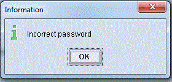
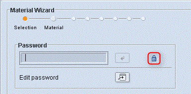
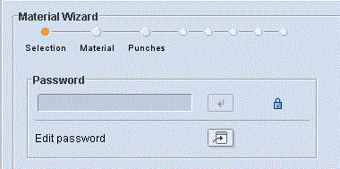
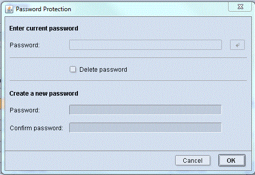
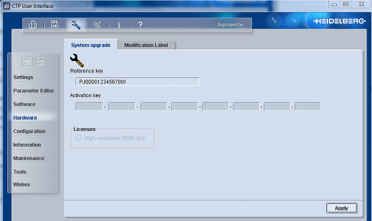
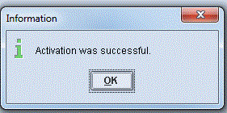

You can protect the Material Wizard by assigning a password.
The Material Wizard can be protected with a password. The identification then lets you access eachof the materials.
Click "Edit" in the list of materials of the Material Wizard window (1).
Above the material selection you now see the window for the password routine.
1. Click the button "Create a new password".


The upper dialog section ("Enter current password") is disabled because there is not yet any password.
3. Confirm the password you typed by typing it again in the "Confirm password" box.
An incorrect input will cause an appropriate dialog box to appear.

5. Retype the password and confirm with "OK" again.
When input was successful, a padlock icon appears next to the Enter key icon.

The padlock icon indicates that the Material Wizard is locked, i.e. password-protected.
The window looks as follows when a password exists:

The padlock icon next to the Enter key icon indicates that the Material Wizard is locked, i.e. a password is present.
After you have typed the password and clicked the arrow (Enter key), you can work with the Material Wizard; the window looks as follows:

You can edit or change your password. The following dialog opens when you click "Edit password":

The lower section is not yet editable.
Type your current password, and click the arrow (Enter key). The following window displays:

"Delete password" and the lower section of the window are activated and can be operated now. You do not want to delete now. but create a new password.
2. Confirm by retyping in "Confirm password".
1. Type your password and click the Enter key icon.

"Delete password" and the lower section "Create a new password" turn active after you have typed the password.

A safety query displays whether or not you really

Note: With the password deleted, the Material Wizard is no longer password-protected..

You must reset your password protection when you have forgotten your password.


4. Click "Apply" when you have made your entry.
The following message will appear after a brief delay:

This message indicates that the password protection of the Material Wizard has been reset. It is no longer password-protected. You can now start the password protection procedure again.
This table lists the available materials.
The material type is shown in this column.
The material name that was entered in "Material Wizard (3)" is shown in this column.
The speed of the imaging drum is shown in this column.
The size of the plate that was entered in "Material Wizard (3)" is shown in this column.
Click "New" if you wish to add another row to the table for new material.
Click "Copy" to copy material you selected beforehand in the table and add it to the table.
Click "Delete" to delete material you selected beforehand from the table after confirmation.
Click "Close" to go back to "Material Wizard (1)".
Click "Back" to go back to "Material Wizard (1)".
This button is only enabled if material was selected in the table or if new material was added to the table by clicking "New".
Click "Next" to open "Material Wizard (3)". You can enter new material data in this dialog.
Copyright © 2016 Heidelberger Druckmaschinen AG